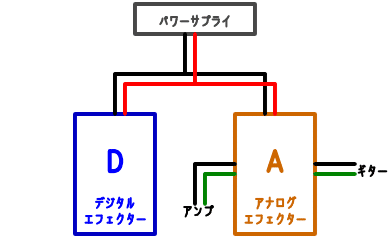
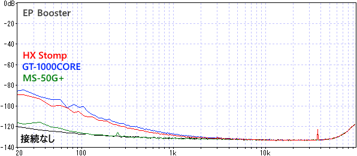
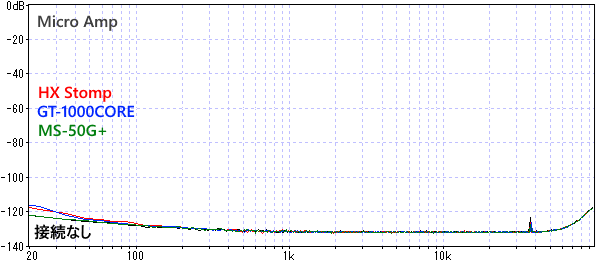
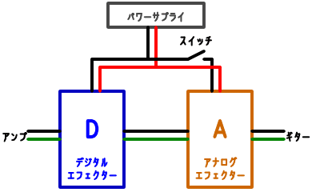
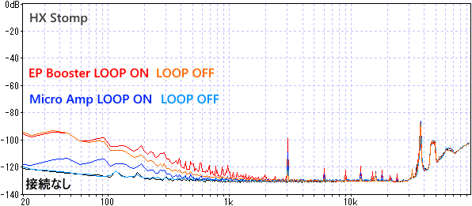
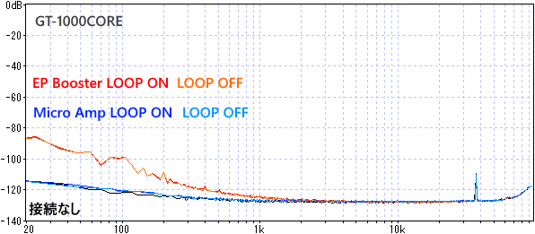
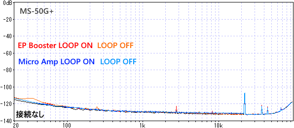

電源分岐接続時のノイズ測定
2024年09月13日 カテゴリー：実験等
今までいろいろな電源について調べてきました（タグ : パワーサプライ ）が、アイソレート式パワーサプライは一般的に高価で、アイソレート式ではないパワーサプライや電源分岐ケーブルで済ませたい場合があるかと思います。アイソレート式ではない電源の場合、グラウンドループやノイズの問題があるといわれることが多いので、実際にどうなるか測定しました。
使用した機材は以下の通りです。
・デジタルエフェクター：LINE 6 HX Stomp BOSS GT-1000CORE ZOOM MS-50G+
・アナログエフェクター：EP Booster V2（クローン） MXR Micro Amp（電源部の抵抗100Ω→0Ω）
・パワーサプライ：Caline CP-205（改造品） ※ポート4つを並列接続
＜電源のみ接続＞

まず電源だけを分岐接続し、音声信号はデジタルエフェクターを通らない状態にしました。


デジタルエフェクターを電源に接続するだけで、低音域側のノイズが増えることがわかります。電源ノイズに弱いエフェクターは、特に影響を受けやすいようです。この低音域のノイズは、ボボボ…という風が吹くようなノイズで、実際にはあまり目立ちません。アンプから出ていても気づかないことも多いと思われます。
＜グラウンドループとグラウンドリフト＞

アナログエフェクターとデジタルエフェクターを直列接続し、グラウンドループ状態を発生させます。そして、スイッチでグラウンド接続を切り離した時の変化を確認します。
・HX Stomp

3kHzの目立つノイズが現れており、これはグラウンドループ由来のノイズのようです。そして、このノイズはループを解除することで解消されています。
・GT-1000CORE

低音域側のノイズがありますが、ループ解除による変化がありません。このノイズはグラウンドループ由来のものではないようです。
・MS-50G+

ほとんどノイズに変化がありません。
電源を単純に分岐した場合、機器の組み合わせによっては目立つノイズが発生することがわかりました。グラウンド接続がないDCケーブルにより、このノイズは解消される可能性があります。一方で、グラウンドループが要因ではないノイズが出ることもあります。このようなノイズを解消したい場合には、結局はデジタルエフェクター専用にACアダプターを準備するか、アイソレート式パワーサプライに頼るしかないかと思います。